ClinicusMed · Dossiê Clinicus — Padrão de Excelência
Nv. 1
0 XP
🎯 O que você vai conseguir fazer depois desse capítulo
Definir hormônio, célula-alvo e órgão-alvo, e diferenciar o mecanismo de ação de hormônios proteicos e esteroides
Explicar a retroalimentação (feedback) negativa e positiva e o conceito de sistema neuroendócrino difuso (DNES)
Descrever a origem embrionária e a organização da hipófise: adeno-hipófise (pars distalis, intermedia, tuberalis) e neuro-hipófise
Reconhecer células cromófilas (acidófilas e basófilas) e cromófobas, e relacioná-las a seus hormônios
Explicar o eixo hipotálamo-hipofisário: sistema porta, corpos de Herring e pituícitos
Descrever a glândula pineal (pinealócitos, melatonina, corpora arenacea)
Descrever o folículo tireoidiano, a síntese dos hormônios tireoidianos e as células C
Diferenciar células principais e oxífilas da paratireoide e relacioná-las à calcemia
Descrever as zonas do córtex e a medula da suprarrenal, com seus hormônios
Descrever as células das ilhotas pancreáticas (A, B, D e F) e integrar com clínica
🧬 Generalidades do Sistema Endócrino
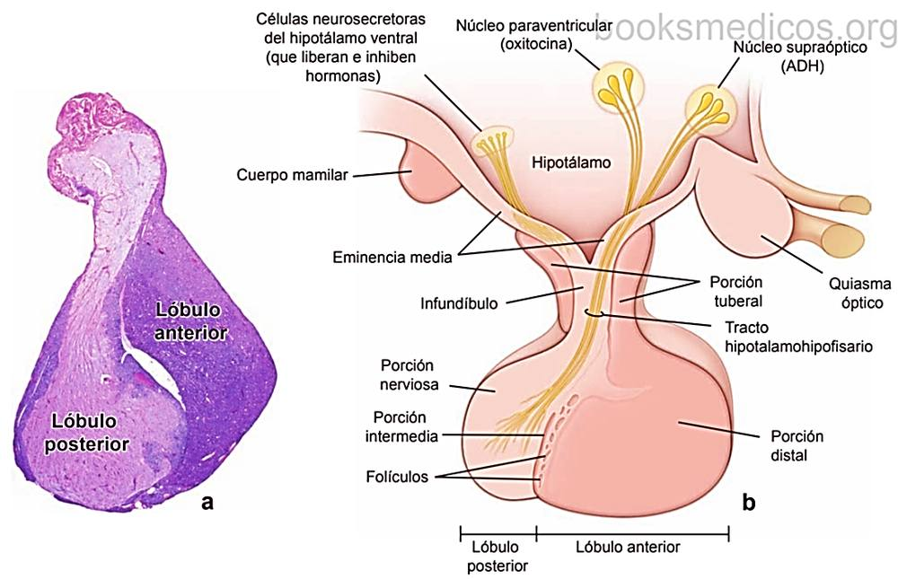
Hipófise: corte histológico (a), mostrando lóbulo anterior e lóbulo posterior, e esquema (b) com hipotálamo, infundíbulo e porções distal, intermédia, tuberal e nervosa
O sistema endócrino produz secreções chamadas hormônios (do grego hormaein: excitar, pôr em movimento), que funcionam como efetores para regular as atividades de diversas células, tecidos e órgãos do corpo.
Funções do sistema endócrino
Secreção de hormônios
Manutenção da homeostase
Coordenação do crescimento e do desenvolvimento corporal
Comunicação com o sistema nervoso
🟢 Hormônios: mensageiros químicos do corpo, que viajam pela corrente sanguínea até tecidos e órgãos. São sintetizados por uma célula e agem sobre outra, chamada célula-alvo (célula diana).
Conceito
Definição
Célula-alvo (célula-branco)
Célula afetada especificamente por um hormônio (possui o receptor para ele)
Órgão-alvo (órgão-branco)
Tecido ou órgão afetado especificamente por um hormônio
Efeito
O hormônio pode estimular ou inibir a função da célula e/ou órgão-alvo
As células que formam o sistema endócrino geralmente se organizam em glândulas endócrinas (de aspecto epitelioide): cordões ou massas de células epiteliais, sem ducto excretor, com rica rede capilar — geralmente fenestrada — que recebe a secreção direto na corrente sanguínea.
Quem secreta hormônios?
Glândula
Número
Hipófise
1
Glândula pineal
1
Glândula tireoide
1
Glândulas paratireoides
4
Pâncreas (ilhotas)
1 (porção endócrina)
Glândulas suprarrenais
2
Ovários
2
Testículos
2
🟢 Sistema neuroendócrino difuso (SNEDS / DNES): conjunto de células endócrinas isoladas em vários órgãos. Função endócrina, com controle autócrino e parácrino da própria atividade e das células epiteliais vizinhas, por difusão das secreções peptídicas.
Exemplos clássicos do SNEDS: as células enteroendócrinas do trato gastrointestinal (como as células I, produtoras de CCK, vistas no capítulo anterior), células endócrinas do trato respiratório e as células C da tireoide (de origem na crista neural).
🔴 Correlação Clínica: tumores originados do SNEDS (tumores neuroendócrinos, como carcinoides) podem secretar hormônios peptídicos de forma autônoma. O carcinoma medular da tireoide, originado nas células C, secreta calcitonina — que serve de marcador tumoral.
🧬 Controle Hormonal: Receptores e Retroalimentação
Os hormônios interagem com receptores hormonais específicos para alterar a atividade biológica das células-alvo. Os hormônios incluem 3 classes de compostos (classificação química padrão): proteicos/peptídicos, esteroides (derivados do colesterol) e derivados de aminoácidos (aminas, como adrenalina e hormônios tireoidianos).
Natureza do hormônio
Onde atua
Origem proteica (hidrofílicos)
Receptor na membrana plasmática (ativa segundos mensageiros)
Esteroides (lipofílicos)
Atravessam a membrana e atuam em receptores intracelulares — efeito sobre o núcleo (regulação gênica)
Mecanismo de retroalimentação
Característica
Negativa (a mais frequente)
O produto final inibe a secreção do estímulo — mantém o equilíbrio. Ex.: cortisol e T3/T4 freiam a secreção de ACTH e TSH
Positiva
O produto final amplifica a própria secreção. Ex.: pico de estrógeno que desencadeia o pico de LH antes da ovulação; ocitocina no parto
💡 Hot Spot: hormônio proteico = receptor na membrana; esteroide = atua no núcleo. E a retroalimentação mais frequente é a NEGATIVA.
🧠 Mnemônico: esteroide é lipossolúvel, "entra em casa" (núcleo); proteico não passa pela membrana, "toca a campainha" (receptor de superfície).
🧠 Hipófise (Glândula Pituitária) — Histogênese e Organização
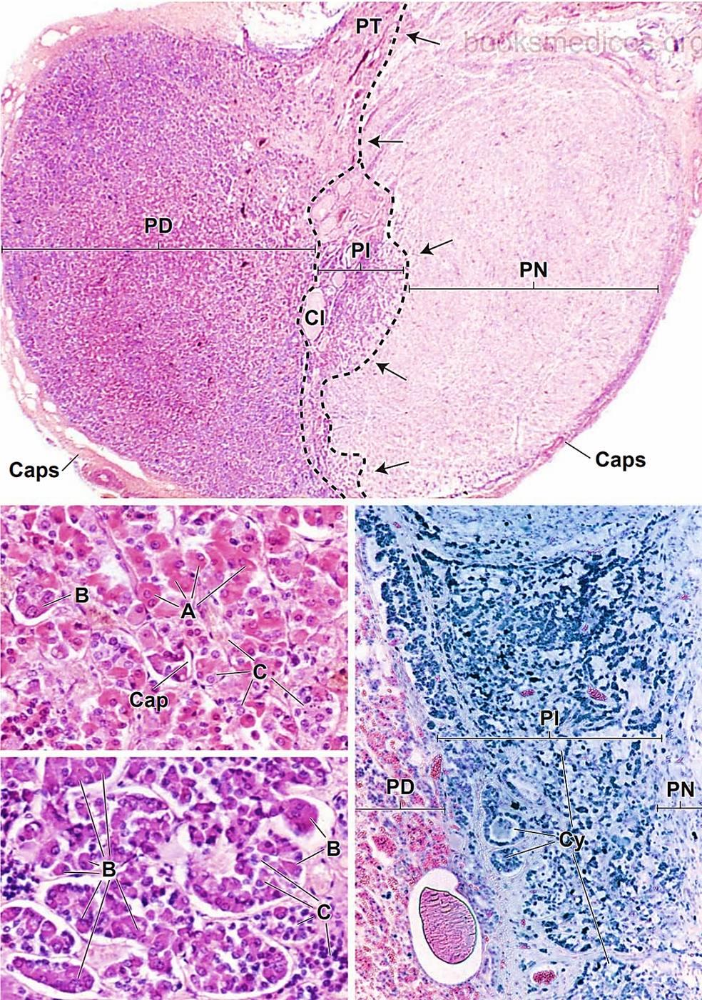
Hipófise em corte panorâmico: PD pars distalis, PI pars intermedia, PN pars nervosa, PT pars tuberalis, Caps cápsula. Abaixo, detalhes celulares da pars distalis (A, B e C marcam tipos celulares) e da pars intermedia (Cy: cistos)
A adeno-hipófise e a neuro-hipófise têm características histológicas distintas, o que coincide com sua origem embrionária diferente.
Parte
Origem embrionária
Detalhes
Adeno-hipófise
Bolsa de Rathke — divertículo ectodérmico da parede do estomodeu (boca primitiva)
Parênquima glandular rosado/avermelhado e mole
Neuro-hipófise
Infundíbulo — divertículo neuroectodérmico do assoalho do diencéfalo
Tecido esbranquiçado e mais firme
Os dois divertículos entram rapidamente em contato e a bolsa de Rathke se separa do estomodeu. O infundíbulo continua comunicado com o diencéfalo: a parte superior forma o tallo neural (haste infundibular) e da porção inferior se desenvolve a pars nervosa, pois as células neuroepiteliais ali presentes proliferam ativamente e se diferenciam em pituícitos.
🟢 Dois componentes funcionais: adeno-hipófise (lobo anterior) e neuro-hipófise (lobo posterior). A hipófise se aloja na sela turca do esfenoide e é controlada pelo hipotálamo.
Divisão
Partes
Adeno-hipófise
Pars distalis + pars intermedia + pars tuberalis
Neuro-hipófise
Pars nervosa + haste infundibular (infundíbulo) + eminência média
💡 Hot Spot: adeno = ectoderma oral (bolsa de Rathke) = tecido GLANDULAR. Neuro = neuroectoderma (infundíbulo) = tecido NERVOSO.
🧠 Adeno-hipófise — Pars Distalis
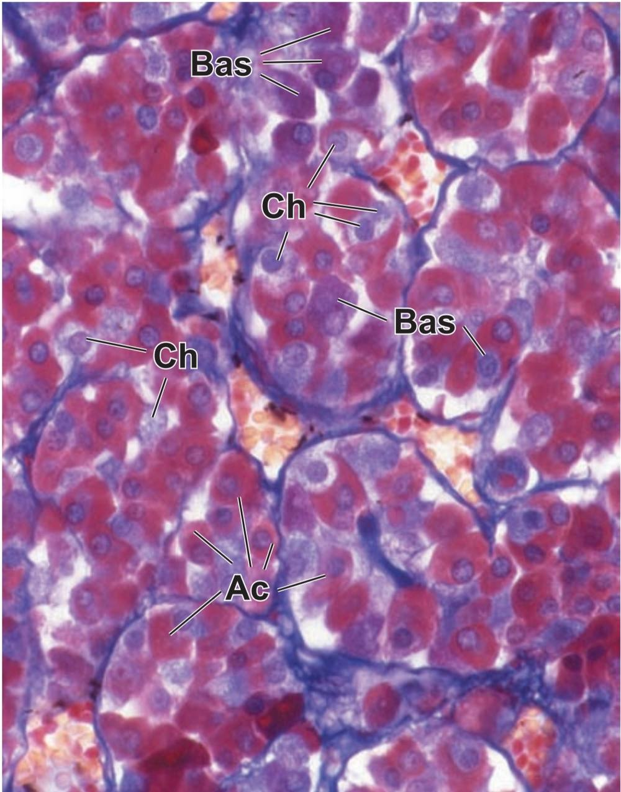
Pars distalis (tricrômico): Ac acidófilas, Bas basófilas e Ch cromófobas, em cordões separados por tecido conjuntivo delicado e capilares
A adeno-hipófise regula outras glândulas endócrinas e alguns tecidos não endócrinos. O lobo anterior tem células agrupadas em cordões e cúmulos separados por capilares sinusoides fenestrados. Essas células respondem a sinais do hipotálamo e sintetizam e secretam:
Hormônios tróficos: ACTH, TSH, FSH e LH
Hormônios não tróficos: GH e PRL
A pars distalis é a maior parte da hipófise. As células ficam em cordões ou cúmulos, em contato estreito com uma rede capilar de grandes luzes irregulares — chamados "sinusoides", mas na verdade capilares fenestrados. Há tecido reticular de sustentação fino e células epiteliais de sustentação, as foliculoestreladas (FS), que envolvem as células produtoras de hormônios.
Divisão das células da pars distalis
Proporção
Cromófilas (se coram bem)
~50%, subdivididas em: acidófilas (40%) e basófilas (10%)
Cromófobas (pouco coradas)
~50% — células indiferenciadas
Tipo celular
Hormônio
Alvo / efeito
Acidófila — somatotrofo
GH (hormônio do crescimento)
Crescimento; estimula fígado a produzir IGF-1
Acidófila — mamotrofo (lactotrofo)
PRL (prolactina)
Produção de leite pela mama
Basófila — corticotrofo
ACTH
Córtex da suprarrenal (glucocorticoides)
Basófila — tireotrofo
TSH
Folículos da tireoide
Basófila — gonadotrofo
FSH e LH
Gônadas (gametogênese e esteroidogênese)
🧠 Mnemônico: basófilas = "FLAT" (FSH, LH, ACTH, TSH — os tróficos); acidófilas = GH e PRL (os não tróficos).
🔴 Correlação Clínica: adenoma de somatotrofos causa acromegalia (adulto) ou gigantismo (criança); prolactinoma causa galactorreia e amenorreia; adenoma de corticotrofos causa doença de Cushing. Células cromófobas incluem células degranuladas ou de reserva.
🧠 Adeno-hipófise — Pars Intermedia e Pars Tuberalis
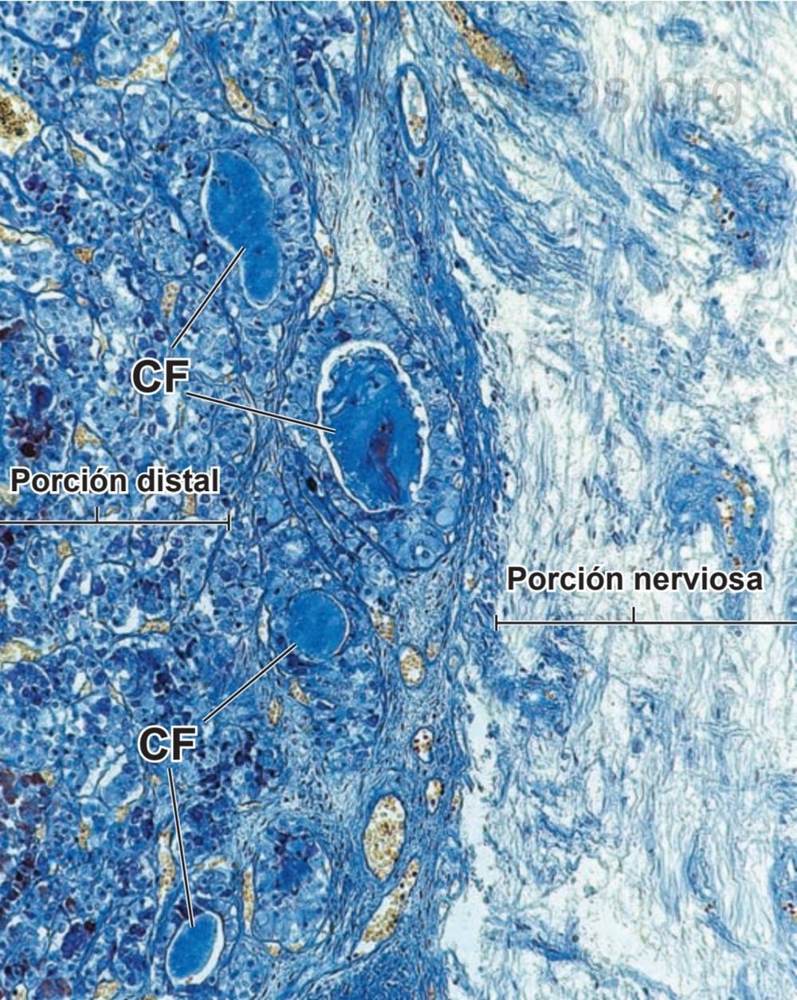
Região de transição entre a porção distal e a porção nervosa (tricrômico), com estruturas císticas (CF) próprias da pars intermedia
Parte
Características
Pars intermedia
Rodeia uma série de pequenas cavidades císticas, restos da luz da bolsa de Rathke. Possui células basófilas e cromófobas. A função dessas células ainda não está bem esclarecida. As basófilas têm vesículas no citoplasma contendo α-endorfina ou β-endorfina. Em rãs, produzem o hormônio estimulante dos melanócitos (melanotrofina, MSH)
Pars tuberalis
Extensão do lobo anterior ao longo do infundíbulo, em forma de colar/tallo. Região muito vascularizada, contém veias do sistema hipotálamo-hipofisário. Células em cúmulos ou cordões longitudinais pequenos, associados aos vasos. Há ninhos de células pavimentosas e pequenos folículos revestidos por células cúbicas
💡 Hot Spot: pars intermedia = cistos (resto da bolsa de Rathke) + endorfinas / MSH (em rãs). Pars tuberalis = muito vascularizada, ao longo do infundíbulo.
🧠 Neuro-hipófise e Hipotálamo
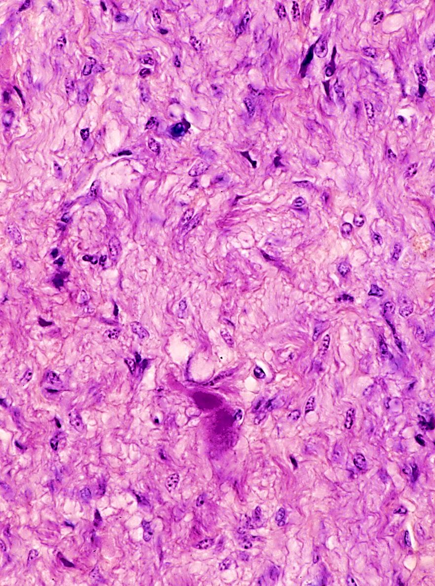
Neuro-hipófise (pars nervosa) em H&E: tecido pálido, fibrilar, com núcleos esparsos
A neuro-hipófise é uma extensão do sistema nervoso central que armazena e libera produtos de secreção sintetizados no hipotálamo. É composta por pituícitos (células de sustentação semelhantes à glia) e por fibras nervosas amielínicas originadas de neurônios neurossecretores dos núcleos supraóptico e paraventricular do hipotálamo.
Núcleo hipotalâmico
Hormônio principal
Ação
Supraóptico
ADH (vasopressina / hormônio antidiurético)
Reabsorção de água no túbulo coletor renal; vasoconstrição
Paraventricular
Ocitocina
Contração do útero (parto) e das células mioepiteliais da mama (ejeção do leite)
🟢 Corpos de Herring: cúmulos de material de secreção (hormônios ligados às neurofisinas) no axoplasma das fibras nervosas, na pars nervosa. A neuro-hipófise NÃO sintetiza hormônios: só os armazena e libera.
O hipotálamo — regulador da hipófise
Neuro-hipófise: conexão neural direta — axônios dos núcleos supraóptico e paraventricular descem pelo tracto hipotálamo-hipofisário até a pars nervosa.
Adeno-hipófise: conexão vascular — neurônios do hipotálamo ventral liberam hormônios de liberação e de inibição na eminência média, onde há um plexo capilar primário. As veias porta hipofisárias levam esses hormônios ao plexo capilar secundário (capilares fenestrados) da pars distalis: é o sistema porta hipotálamo-hipofisário.
💡 Hot Spot: ADH e ocitocina são sintetizados no hipotálamo (núcleos supraóptico e paraventricular) e somente armazenados/liberados na neuro-hipófise. Os hormônios da adeno-hipófise são sintetizados nela mesma, sob comando de hormônios hipotalâmicos que chegam pelo sistema porta.
🔴 Correlação Clínica: deficiência de ADH causa diabetes insípido central (poliúria e polidipsia com urina diluída). A lesão da haste hipofisária (trauma, tumor) interrompe tanto o sistema porta quanto o tracto neural.
🌙 Glândula Pineal
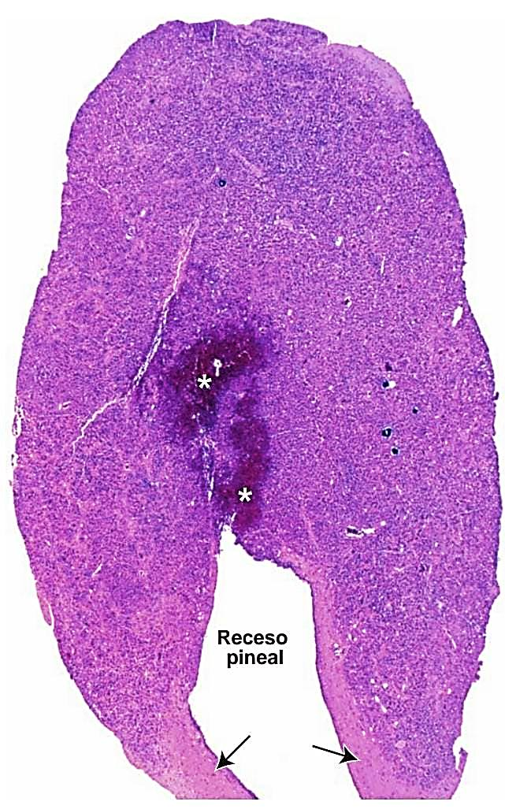
Glândula pineal em corte longitudinal, com o recesso pineal (setas)
É uma glândula neuroendócrina e órgão fotossensível (recebe informação da luz por via retina — hipotálamo — gânglio cervical superior), que regula o ciclo dia/noite, ou seja, o ritmo circadiano.
Produz melatonina, derivada da serotonina, estimulada pela escuridão e inibida pela luz.
Suas células são os pinealócitos: núcleo grande com escotaduras profundas e inclusões lipídicas no citoplasma. Há também astrócitos intersticiais.
Corpora arenacea ("areia cerebral", cuerpos arenáceos): concreções de fosfato e carbonato de cálcio na matriz, que aumentam com a idade e servem como referência radiológica na linha média do encéfalo.
🔴 Correlação Clínica: tumores da região pineal (pinealomas, germinomas) podem comprimir o aqueduto cerebral causando hidrocefalia, além de alterar o ritmo sono-vigília e a puberdade.
🦋 Glândula Tireoide — Anatomia e Histologia
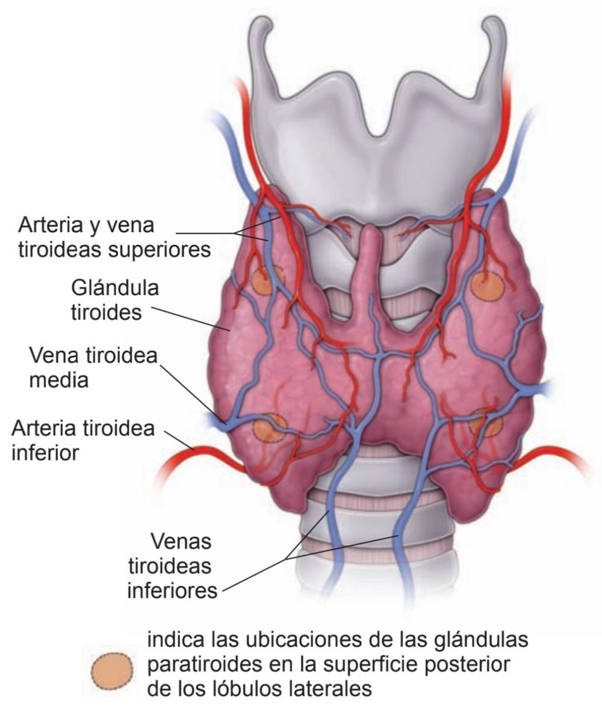
Tireoide em vista anterior: artérias e veias tireóideas, e (círculos) a posição das paratireoides na face posterior dos lobos laterais
Localizada na base do pescoço, de ambos os lados da parte inferior da laringe e da parte superior da traqueia. Apresenta dois lobos laterais e um istmo; muitas vezes um lobo piramidal se estende acima do istmo. Cor pardo-avermelhada e consistência mole.
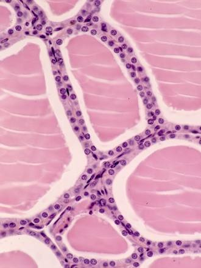
Folículos tireoidianos: células foliculares, coloide na luz folicular e capilares no tecido conjuntivo interfolicular
🟢 Folículo tireoidiano: unidade ESTRUTURAL e FUNCIONAL da glândula. Epitélio simples cúbico que circunda um espaço cheio de substância viscosa, o coloide.
A tireoide é composta de cistos ou folículos separados por escasso tecido conjuntivo interfolicular, com fibroblastos e finas fibras colágenas.
Capilares fenestrados sobre a lâmina basal dos folículos.
Os folículos são formados por células foliculares e células C.
Cápsula de duas camadas: uma externa, de tecido conjuntivo frouxo, e outra aderida à glândula, de tecido conjuntivo denso (a cápsula verdadeira).
Célula
Produto
Efeito
Folicular
Tiroxina (T4) e triiodotironina (T3)
Estimulam o metabolismo
C (parafolicular)
Calcitonina
Diminui a concentração plasmática de cálcio
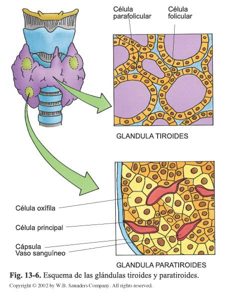
Esquema: tireoide (célula folicular e célula parafolicular) e paratireoide (célula principal, célula oxífila, cápsula e vaso sanguíneo)
🦋 Síntese dos Hormônios Tireoidianos e Células C
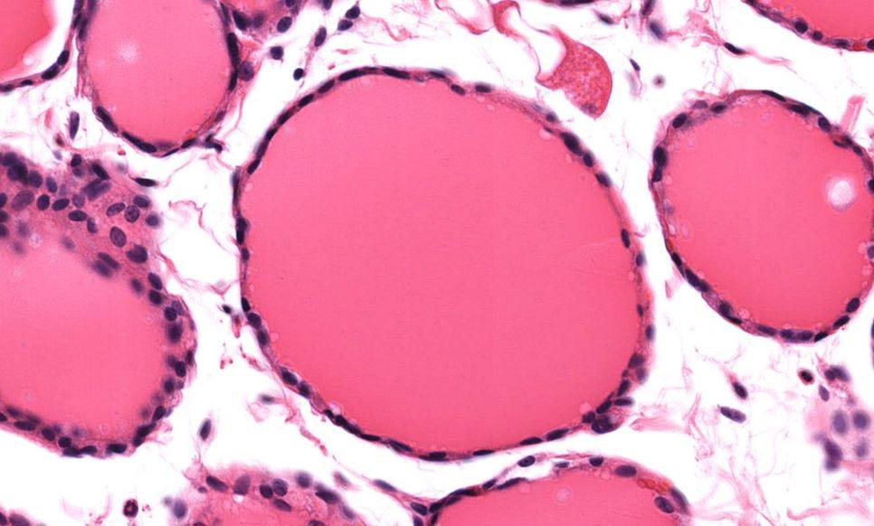
Folículos tireoidianos de tamanhos variados, com coloide eosinofílico preenchendo a luz
O componente predominante do coloide é a tireoglobulina, que contém precursores de tiroxina e triiodotironina, formados por iodização e acoplamento de pares de resíduos de tirosina na cadeia peptídica da tireoglobulina.
Etapa
Detalhe
1. Síntese da tireoglobulina
No RER e no Golgi. É uma glicoproteína (cerca de 3% da proteína é composta por resíduos de tirosina). Os carboidratos são adicionados tanto no RER quanto no Golgi
2. Secreção para a luz
O produto é incorporado a grânulos subapicais, que migram à superfície apical e liberam a tireoglobulina na luz por exocitose
3. Oxidação do iodo
Os íons iodeto captados são oxidados pela enzima peroxidase tireoidiana antes de serem incorporados
4. Iodização
A tirosina da tireoglobulina é iodizada, via peroxidase tireoidiana, na parte periférica da luz folicular, em estreita relação com a superfície apical
5. Liberação (complemento)
Sob estímulo do TSH, o coloide iodado é reabsorvido por endocitose, fundido a lisossomos e hidrolisado: T3 e T4 são liberados aos capilares
🟢 Células C (parafoliculares):
Número muito menor que as células foliculares
Desenvolvem-se a partir da crista neural e fazem parte do sistema neuroendócrino difuso
Localização basal ao epitélio folicular, nunca em contato com a luz; isoladas ou em pequenos grupos de 3 a 4 células, sempre dentro da membrana basal, entre ela e as células foliculares
Ovaladas, maiores e mais claras que as foliculares, com núcleos maiores e frequentemente mais claros
🔴 Correlação Clínica: em hiperfunção (ex.: doença de Graves), o epitélio folicular torna-se alto (colunar) e o coloide diminui; em hipofunção, o epitélio fica achatado e o coloide acumula-se. A deficiência de iodo causa bócio. O carcinoma medular deriva das células C e secreta calcitonina.
🦴 Glândulas Paratireoides
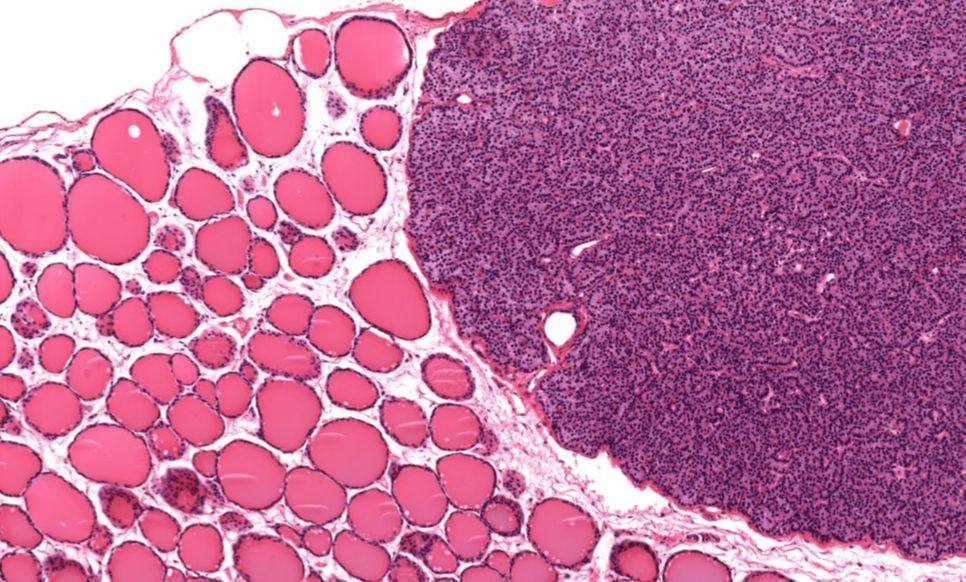
Tireoide (esquerda: folículos com coloide) e paratireoide (direita: parênquima celular compacto)
São quatro corpos ovais pequenos, de cor pardo-amarelada, medindo cerca de 5 x 3 mm e pesando cerca de 130 mg. Localizam-se entre as duas camadas da cápsula tireoidiana (face posterior dos lobos laterais da tireoide).
Cápsula, com septos para o interior, sem formar verdadeiros lóbulos.
Células em cordões envolvidos pelos septos de tecido conjuntivo; alguns pequenos folículos.
Cada célula é rodeada por fibras reticulares; rede capilar abundante entremeada no parênquima.
No adulto, o tecido adiposo (adipócitos) representa cerca de metade da glândula.
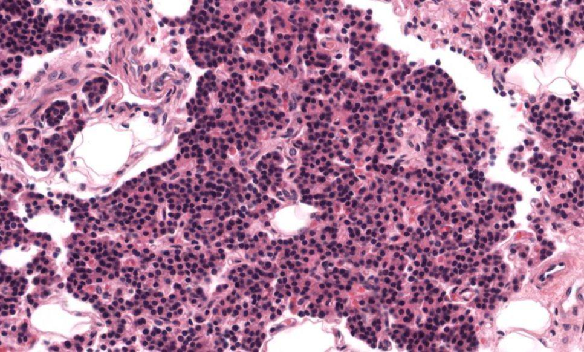
Parênquima da paratireoide: células agrupadas de forma compacta, entremeadas por vasos
Célula
Características
Principal (chief)
Mais numerosa; pequena, citoplasma levemente corado; sintetiza e secreta o paratormônio (PTH)
Oxífila
Menos numerosa; maior, com citoplasma intensamente acidófilo pelo grande número de mitocôndrias; aparece com a idade; função hormonal não esclarecida
🟢 Função: as paratireoides desempenham papel fundamental na manutenção da concentração normal de cálcio nos líquidos e tecidos do organismo. O PTH aumenta a calcemia (osteoclastos via RANKL, reabsorção renal de Ca²⁺, ativação de vitamina D); a calcitonina da tireoide faz o oposto.
🔴 Correlação Clínica: hiperparatireoidismo (geralmente adenoma) causa hipercalcemia, cálculos renais e osteíte fibrosa cística. Lesão ou remoção das paratireoides numa tireoidectomia causa hipocalcemia com tetania.
⚡ Glândulas Suprarrenais (Adrenais) — Generalidades e Córtex
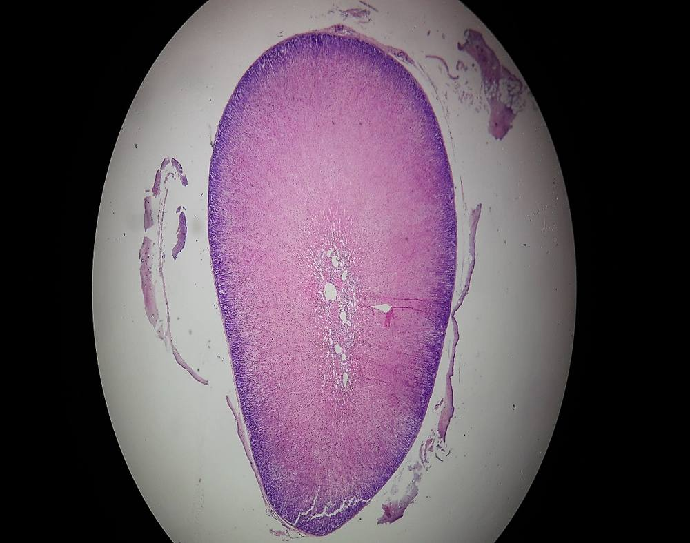
Corte panorâmico de glândula suprarrenal: córtex periférico e região medular central
Órgãos pares e achatados, no retroperitônio, sobre a parede posterior do polo superior de cada rim. Têm um hilo na face anterior. Medem cerca de 1 x 3 x 5 cm e pesam, em conjunto, cerca de 10 g.
Macroscopicamente apresentam córtex e medula, que do ponto de vista embriológico e funcional são dois órgãos endócrinos diferentes (córtex: mesoderma; medula: crista neural). Secretam hormônios esteroides (córtex) e catecolaminas (medula).
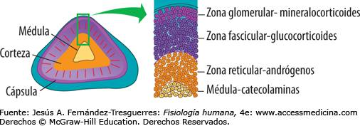
Zonas do córtex e hormônios: glomerular (mineralocorticoides), fasciculada (glucocorticoides), reticular (andrógenos); medula (catecolaminas)
Cápsula: tecido conjuntivo colagenoso.
Trabéculas: penetram no córtex até profundidades variáveis e conduzem vasos sanguíneos e fibras nervosas até a medula.
Rede de fibras reticulares envolve as células parenquimatosas do córtex e da medula.
O córtex divide-se em três zonas concêntricas, de fora para dentro, com transição gradual entre elas. A zona fasciculada representa a maior parte do córtex.
Zona
Proporção
Histologia
Hormônios
Glomerular
~15%
Pequenas células em grupos arredondados ou arcos. Núcleo redondo e muito basófilo; citoplasma eosinófilo com grumos basófilos esparsos (RER). Gotas lipídicas pequenas e escassas
Mineralocorticoides (aldosterona): eliminação de Na⁺ e K⁺ pela urina
Fasciculada
~80%
Cordões ou colunas radiais de células, em geral com espessura de 2 células. Células grandes e poliédricas, núcleo central bastante claro. Citoplasma acidófilo com muitos espaços redondos vazios (gotas lipídicas dissolvidas): aspecto esponjoso (espongiócitos)
Glucocorticoides (cortisol): metabolismo de carboidratos e proteínas
Reticular
~5-7%
Rede de cordões celulares anastomosados, separados por sinusoides. Cordões de uma única camada de células cilíndricas com citoplasma eosinófilo e poucas gotas lipídicas pequenas. Perto da medula há células escuras (citoplasma mais corado, núcleo menor e cromatina densa), cuja importância é desconhecida
Andrógenos (DHEA e androstenediona)
🟢 Esteroides do córtex: todos sintetizados a partir do colesterol (corticosteroides): mineralocorticoides, glucocorticoides e, também, andrógenos (dehidroepiandrosterona e androstenediona).
🧠 Mnemônico (de fora para dentro): "GFR — Sal, Açúcar, Sexo" — Glomerular: sal (mineralocorticoide); Fasciculada: açúcar (glucocorticoide); Reticular: sexo (andrógenos). E a medula: adrenalina.
💡 Hot Spot: a zona glomerular é regulada principalmente por angiotensina II e K⁺ (sistema renina-angiotensina); as zonas fasciculada e reticular são reguladas pelo ACTH hipofisário.
⚡ Medula Suprarrenal
Compõe-se de cordões celulares separados por capilares e vênulas. O citoplasma das células é basófilo e contém grânulos finos (catecolaminas: adrenalina ~90% e noradrenalina ~10%).
Células ganglionares simpáticas
Células cromafins (neurônios modificados — derivam da crista neural) que sintetizam, armazenam e secretam adrenalina e noradrenalina. Recebem inervação de fibras simpáticas pré-ganglionares (acetilcolina). A reação cromafim (sais de cromo) cora os grânulos de marrom.
💡 Hot Spot: o cortisol do córtex chega à medula pelo sistema porta intra-adrenal e induz a enzima PNMT, que converte noradrenalina em adrenalina — por isso a adrenalina predomina (90%).
🔴 Correlação Clínica: o feocromocitoma, tumor das células cromafins, causa crises de hipertensão, cefaleia, sudorese e palpitações. Hiperfunção do córtex: síndrome de Cushing (cortisol), síndrome de Conn (aldosterona). Hipofunção: doença de Addison (hipotensão, hiponatremia, hipercalemia e hiperpigmentação por ACTH elevado).
🍬 Pâncreas Endócrino — Ilhotas de Langerhans
As ilhotas de Langerhans representam, no total, cerca de 1% do pâncreas. São massas compactas de células epiteliais poligonais em cordões curtos, atravessadas por rica rede de capilares fenestrados, dispersas no tecido exócrino (mais numerosas na cauda e no corpo do pâncreas).
Célula
% da ilhota
Hormônio
Efeito
A (alfa)
15-20%
Glucagon
Aumenta a glicemia (glicogenólise e gliconeogênese)
B (beta)
60-70%
Insulina
Diminui a glicemia
D (delta)
5-10%
Somatostatina
Inibe a secreção de insulina e glucagon (ação parácrina)
F (PP)
1-2%
Polipeptídeo pancreático
Regulação local (secreção exócrina e motilidade biliar/gástrica)
📌 Pergunta clássica: "qual é a célula mais numerosa da ilhota?" — Células B (beta), 60-70%, produtoras de insulina.
🔴 Correlação Clínica: no diabetes mellitus tipo 1 há destruição autoimune das células B. No tipo 2 há resistência à insulina com eventual exaustão das células B. O insulinoma causa hipoglicemia; o glucagonoma, hiperglicemia e eritema migratório necrolítico.
Os detalhes da porção exócrina (ácinos serosos, células centroacinosas, ductos) estão no Capítulo 6. Ovários e testículos (gônadas endócrinas) são estudados nos capítulos do sistema reprodutor.
🔁 Visão Integrada dos Eixos Hormonais
Eixo
Hipotálamo
Adeno-hipófise
Glândula-alvo
Retroalimentação negativa
Tireoidiano
TRH
TSH (tireotrofos)
Tireoide: T3 e T4
T3/T4 inibem TRH e TSH
Adrenal
CRH
ACTH (corticotrofos)
Córtex suprarrenal: cortisol
Cortisol inibe CRH e ACTH
Gonadal
GnRH
FSH e LH (gonadotrofos)
Ovários e testículos
Esteroides sexuais e inibina
Crescimento
GHRH (+) / somatostatina (-)
GH (somatotrofos)
Fígado: IGF-1
IGF-1 inibe GH
Lactação
Dopamina (inibe PRL)
PRL (mamotrofos)
Mama
Controle inibitório dopaminérgico
Cálcio
-
-
Paratireoide (PTH) e células C (calcitonina)
A própria calcemia regula a secreção
💡 Hot Spot: a retroalimentação NEGATIVA é a mais frequente. Prolactina é a exceção: seu controle hipotalâmico é predominantemente INIBITÓRIO (dopamina).
💪 Fixação rápida
✅ O que você deve lembrar
Hormônio proteico = receptor na membrana; esteroide = núcleo; feedback negativo é o mais frequente. DNES = células endócrinas isoladas (ação autócrina/parácrina). Adeno-hipófise: bolsa de Rathke; neuro-hipófise: infundíbulo (pituícitos + fibras amielínicas dos núcleos supraóptico e paraventricular; corpos de Herring). Pars distalis: cromófilas (acidófilas 40%, basófilas 10%) e cromófobas (50%); tróficos = ACTH, TSH, FSH, LH; não tróficos = GH e PRL. Pars intermedia = cistos + endorfinas. Pineal: pinealócitos, melatonina (escuridão estimula), corpora arenacea. Tireoide: folículo (cúbico simples + coloide/tireoglobulina), peroxidase iodiza na luz, células C (calcitonina, crista neural, basais). Paratireoide: 4 glândulas, principais (PTH) e oxífilas. Suprarrenal: glomerular 15% / fasciculada 80% / reticular 5-7% + medula (cromafins, adrenalina 90%). Ilhotas: B 60-70% insulina, A 15-20% glucagon, D 5-10% somatostatina, F 1-2% PP.
⚠️ Erro comum
Dizer que a neuro-hipófise produz ADH e ocitocina (ela só armazena e libera; a síntese é hipotalâmica). Confundir cromófilas (50%) com acidófilas (40%). Achar que as células C ficam em contato com o coloide (ficam entre a membrana basal e as foliculares). Trocar a ordem das zonas da suprarrenal (de fora para dentro: glomerular, fasciculada, reticular). Esquecer que a zona fasciculada é a maior (80%). Achar que as paratireoides ficam dentro dos folículos tireoidianos (ficam entre as duas camadas da cápsula).
⚡ Pergunta-relâmpago
Qual célula da tireoide origina-se da crista neural e secreta calcitonina?
Célula C (parafolicular), localizada entre a membrana basal e as células foliculares, sem contato com a luz.
🧪 Autoavaliação
Explique por que a neuro-hipófise não é uma "glândula" no sentido clássico e como o hipotálamo controla cada lobo da hipófise.
A neuro-hipófise é extensão do SNC: armazena e libera ADH e ocitocina sintetizados nos núcleos supraóptico e paraventricular (via axônios amielínicos, corpos de Herring). A adeno-hipófise é glandular e é comandada pelo sistema porta hipotálamo-hipofisário.
🩺 Caso Clínico Progressivo — Do Hipertireoidismo ao Hipercortisolismo
Vamos acompanhar pacientes com alterações da tireoide, das paratireoides, da hipófise e das suprarrenais, relacionando cada caso à histologia das glândulas endócrinas. O caso evolui em 3 níveis — clica em cada um pra ver como as coisas vão se desenrolando.
🩺 Recomendado pela ClinicusMed
🎥 Complemento em Vídeo
A Clinicus selecionou este conteúdo para complementar seu estudo. Não substitui a leitura do resumo — o resumo ensina, o vídeo reforça.
Carregando recomendações...
🃏 Flashcards — SM-2 real + interface Anki
O sistema guarda, no seu navegador, quais cards você já sabe bem e quais precisam voltar mais cedo — cada vez que você avalia um card, ele recalcula quando ele deve voltar.
Cartão 1 / 0Dominados: 0
PERGUNTA
RESPOSTA
✅ Banco de Questões Comentadas
14 questões, do mais básico ao mais puxado. Escolhe uma alternativa, depois clica em "Ver comentário completo" — vale a pena ler até quando você acerta, porque o comentário explica cada alternativa, não só a certa.
🎮 Quiz Rápido
🖼️ Atlas de Imagens — Hipófise, Pineal, Tireoide, Paratireoide e Suprarrenal
Todas as imagens desse capítulo, reunidas num só lugar pra revisão rápida.
Hipófise — corte histológico e esquema com hipotálamo
Hipófise — PD, PI, PN e PT; detalhes celulares
Pars distalis — acidófilas, basófilas e cromófobas
Pars intermedia — estruturas císticas
Neuro-hipófise (pars nervosa) em H&E
Glândula pineal — recesso pineal
Tireoide — vascularização e posição das paratireoides
Esquema — células foliculares, parafoliculares, principais e oxífilas
Folículos tireoidianos — coloide, células e capilares
Folículos tireoidianos em H&E
Tireoide (folículos) e paratireoide (parênquima compacto)